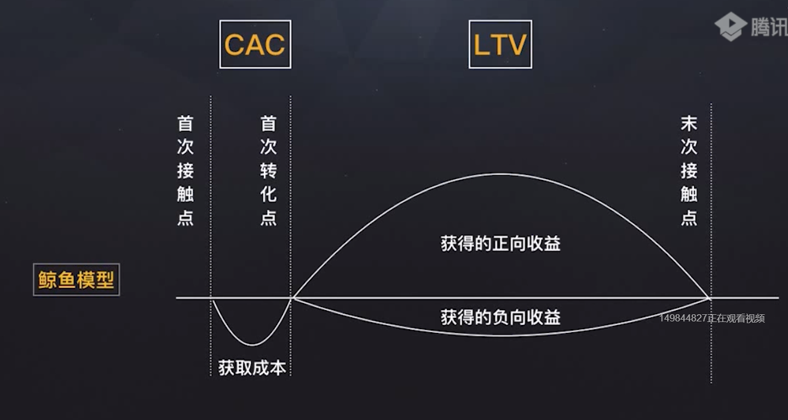

花点时间案例：
- 1.独特的价值主张和鲜明的人设俘获第一批种子用户
- 2.用裂变工具来降低获客成本
- 3.找到一个核心渠道来加固护城河
0-1：
- 目标是打磨一个创业项目的MVP，证明在相对小业务量时我们的团队已经有能力把用户服务地很好
- 我从哪里去找我的种子用户，有什么相对低成本的启动方法
1-N：
- 已经实现MVP，完成了从0-1阶段，想要产品价值和更多人产品连结
- 批量化获客
N-M：
- 已经有非常成熟的产品，有大体量的用户，在自己的赛道里遇到了一定增长瓶颈
- 创新项目孵化、业务转型
增长的本意是规模性扩张一个已经有市场需求（PMF）的产品
鲸鱼模型：
- 用户获取成本CAC
- 计算时应该纳入所有投放渠道
- 计算时应该去掉自然增长的部分
- 用户生命周期价值LTV
- 在不同业务中有不同的表现
- 要注意LTV的回收周期PBP（pay back period）

- 用户生命周期净值=LTV-CAC
- 用户生命周期价值最大化，获取成本最小化

北极星指标：反映产品提供给用户的核心价值

- 增长目标要符合SMART原则：具体的、鼓舞人心的、共识的、附带所需资源的、有时间点的
增长官能力图谱


3大趋势：
- 95后消费
- 母婴
- 新蓝领
十种流利获取方式：
- 域名
- 网址站
- 搜索引擎SEM/SEO
- 手机厂商
- 应用市场ASO
- 信息流广告
- 内容（公众号）
- 微信广告
- 小程序
- 内容（短视频）
传播：
- 1.某些有影响力的人，相比同样人数却不太有影响力的人群，将对扩散起到更大的作用
- 2.那些在传播网络中有强大人际节点能力的关键角色对传播的作用有不同的分工
- 3.指数级增长的关键：实现从创新先驱到早期采用者（意见领袖）的跨越
5类人群用户画像


意见领袖三种类型：
- 联络员
- 内行
- 推销员
付费投放的4个要素
- 1.定向：
- 用户画像
- OCPC：以目标转化为优化方式的点击出价；广告主设定投放目标，并给出目标转化价格，广告系统按照预估的点击率和转化率，向最有可能发生转化的用户展示广告，并保证转化成本尽可能低于广告主的目标出价；分成学习+实施两个阶段
- 2.素材：
- 没有测过100套文案，不足以定性一个渠道质量的好坏
- 如何有效测试创意：确认核心创意元素，通过历史数据，其他媒体历史数据，寻找高转化率核心创意元素；上传多创意，寻找高点击率素材，对最精准人群，在同一广告计划上传多创意，控制核心创意元素不变，测试其他创意组合效果；
- 3.结算方式
- CPA
- CPS
- CPM
- CPT
- CPC
- 4.策略
- 聚焦法则
- 塔基法则
- 沸点法则
CPC用户激活成本
如果用户在没有get到产品核心价值之前就离开了，那么后续的付费和分享就更无可能了
不友善体验VS友善的体验
- 小程序：打开即要求授权 VS 在触发真正核心的交互行为时才需要授权
- App：开屏调研 VS 开屏的调研是一个温和友好的orientation
- 公众号：付费 VS 先让用户体验到产品的核心价值再尝试付费转化
- 账号类产品：部分权限锁定 VS 提供限时的高级账户功能体验
- to B类产品：繁琐的注册流程 VS 极简的开启流程，使用某些特定功能时再补齐
让客户扣去扳机的影响力6要素
- 互惠：
- 我们接受恩惠的义务感削弱了自己的选择能力，并把控制权交到了他人的手中；
- 产品试用；
- 见面礼；
- 承诺和一致：
- 我们都有一种要做到（而且显得）与过去的行为相一致的愿望……因为长久以来高度的一致和优越的智力联系在一起；
- 勾选次项代表你会XX，如会用 优惠券，提供反馈……；
- 预售/定金；
- 社会认同
- 当不确定性占上风时，我们最有可能以别人的行为作为自己行动的参照；
- 绕地球多少圈
- XXX人的选择
- 加起来XX公里
- 客户评价
- 累计销量
- 客户logo墙
- 喜好
- 人们总是比较愿意答应自己认识和喜爱的人提出的要求
- 达人推荐
- IP/人设
- 好友背书
- 权威：
- 我们从一出生就被告知，服从权威是应该的，而违抗权威则是不对的……对权威的忠诚会得到很高的评价；
- 专家认可；
- 资质证书；
- 领袖参与；
- 知名合作伙伴/媒体报道；
- 名人代言；
- 稀缺
- 有趣的是，与希望获得一样东西的渴望相比，害怕失去同样价值的东西的恐惧似乎更能成为人们行动的动力
- 只有满足XX条件
- 仅剩XX个名额
- 仅限前XX名
- 限X时前有优惠
- 尊贵VIP

按照用户行为分层

用户池的“暗箱”里每天都在发生些什么

按照RFM进行分层
- R：最后一次消费时间与当前时间的间隔
- F：一定时间内的消费频次
- M：一定时间内的消费金额
- Step1搜集用户数据：用户id、最近一次交易时间、交易金额
- Step2打分
1-9-90模型
- 1）1%的创新先驱者—做朋友：
- 保持频繁的沟通，包括新品的上线，最新的公司动态等，这样其实是让真正关注我们的人感受到我们的进步和成长持续地把用户反馈转化为实际行为
- 2）9%的核心意见领袖—做口碑：
- 备好让他们去refer的素材和对应的分享工具，让他们更好更便捷地去传播，然后给他们足够有吸引力的回馈
- 通过一些针对性的福利和折扣让他们有很高的消费频次
- 3）90%的大众市场—做服务：
- 扮演好服务者的角色，让他们满意，并适时地输出自己的价值主张，以争取他们对我们进一步的好感
一条Referral=f(动因、媒介、链路)，推荐/分享>裂变
动因：自然口碑（AHa moment）、人为助推
媒介：平台属性、用户属性
链路：切忌“断头体验”

自然口碑的本质是让用户A-ha（顿悟）
- 企业自发的：用户旅程User Journey，峰终理论Peak End Rule
- 用户自发的：各类社交媒体，比如微信、微博、抖音、知乎、豆瓣、B站等
用户旅程

- PSPS：Personas、Scenarios、Painpoints、Solution，全链路场景分析
峰终定律

利用人性的弱点来助推
- 互惠
- 和钱挂钩
- 不和钱直接挂钩的
- 炫耀（社交货币）
- 直接的：已坚持XX天/累计XX/花了XX
- 间接的：我付费的XX可以在XX时间内免费....
- 利诱（正向）（限时限量，风控体系）
- 做XX得到什么
- 利诱（反向）（限时限量，风控体系）
- 做XX可能不会失去什么
- 自我认知（社交货币，重在文案）
- 我是谁，我有什么样的特性...
- 好奇（从众心理，熟人背书）
- 你的好友做了XXX
- 暧昧（唤醒机制）
- XX默默关注了你
- 恶搞（反差）
- 以为是XX，结果是XX
衡量一次分享裂变的效果
- NPS净推荐值：自然口碑下的传播效果

- 分享回流率：主要衡量的是人为助推下的传播效果；
- 分享回流=通过分享来的用户数/分享用户数；
- 分享新增回流=通过分享来的新增用户数/分享用户数
行为经济学
- 交易效用：我们在消费时，会受到商品参考价和现价之间的差价的影响，也就是说，我们可能会更加看重“交易效用”，即在交易过程中获得的满足（感觉自己赚到了），而忽略了商品的“实际效用”，即商品本身给我们带来的满足
- 心理账户：人们会将客观等价的收入或支出在心理上划分到不同的账户中，从而管理和控制自己的消费行为，而且这个过程通常是在不知不觉中完成的
- 禀赋效应：“你拥有的东西属于你的一部分”，“与你即将拥有的东西相比，你会更看重自己已经拥有的东西”
- 损失厌恶：

禀赋效应背后是“沉没成本”对消费者的影响
- 增强使用频率：沉没成本会增强消费者对商品的使用频率
- 减少转换行为：有助于消费者产生积极的消费态度和忠诚行为
- 提升商品评价：会引起消费者的禀赋效应，从而提升对商品的评价
- 增强购买意愿：沉没成本会增强消费者的购买意愿，以及支付更高价格的意愿
游戏化思维：将游戏设计的手段应用于非游戏的场景。更简单地说，就是用游戏的框架，解决工作生活中一切非游戏的问题
排行榜：激发用户的好胜心
游戏化思维的底层设计规律
- 荣耀：奖励要有高级感，有足够的“社交货币”可以让用户去晒，SAPS
- Status地位：让用户觉得自己的社会阶层提高了
- Access接口：让用户觉得自己的社交圈扩大了
- Power掌控感：让用户觉得自己对生活有掌控感
- Stuff实物：让用户觉得自己占了便宜
- 目标：目标是具体的，完成目标的奖励和反馈也是具体的。人在完成任何事情的时候，都习惯于被目标驱动，且迫切的希望并竭尽全力地完成到下一个“里程碑”节点
- 互动：情感的需求在游戏中是存在的，仅次于对荣耀的追求
- 惊喜：惊喜就是随机性，没有随机性，就没有游戏
品牌价值=心理关联（想得起来）*购物便利（还能买到）
黄金思维圈

当我们谈流失的时候我们在谈什么

- 每月净增用户数=每月新增用户数-每月流失用户数+每月唤醒用户数
- 用户流失=企业资产流失
- 用户唤醒=盘活企业资产
用户什么流失？

用户唤醒
- 1. 给用户提供“不间断”的机会
- 2.欢迎回来&告知最近的改变
- 3.提醒之前的需求有新的解决方案/优惠
- 4.新功能（最好还能蹭热点）上线
- 5.节日问候
“一个新顾客的获取成本，是维护一个老用户的5倍”，暗含2个假设：
- 老用户的流失率是可通过各种运营手段大幅降低的
- 老用户的维系成本几乎为零
"双重危机定律"：市场渗透率越低，顾客流失率越高
- 与吸引新顾客相比，留住老用户的收效甚微
- 用户增长的关键还是在新用户获取上
增长之于toB类产品的意义在于：从“用户思维”到“客户思维”的转变，差点点：
- 1.决策主体：个体VS团队
- 2.影响方式：用户体验VS用户案例/白皮书.....
- 3.服务方式：1对多VS1对1
不管是toB还是toC，都是toH（Human），可借鉴2C的趋势：
- 1.流量入口的变化-逐渐在一个流量池抢夺用户的注意力
- 2.用户习惯的变化-信息过载让用户推动深度思考的耐性
SCRM对于低频高客单类产品的增长价值在于：通过延长和用户的交互时间来降低获客成本
低频高客单=缺少练习机会+决策复杂度高
增长之于工具类产品的意义在于：降低用户在使用工具时的摩擦系数
“并不是说增长团队真的不创造价值，而是说增长团队的价值体现在让用户在体验和使用这个核心产品时的阻碍更少”——Pinterest增长团队负责人
降低用户在使用工具时的摩擦系数，需要解决3个核心问题：
- 1.谁用
- 2.在什么场合用
- 3.怎么用
The Design Sprint

增长之于在线教育类产品的意义在于：利用Refferal来大幅降低获客成本
教育行业：
- 1.用户为什么要推荐？
- 2.去哪里推荐？
- 3.怎么推荐？
VIPKID的“超级用户思维”
- 不去盲目扩张，而是沉住气用心打磨产品，通过良好的口碑产生杠杆效应，从而赢得更多的用户
- 超级用户基于他们的使用感受，为VIPKID做口碑传播
增长之于电商类产品的意义在于：将“带货王”们的“社交关系链”发挥到极致
社会化电商：

默认网络指的是这样一个事实：当其他任务完成时，这个网络会在默认的情况下打开
- 我们的大脑之所以对社交圈感兴趣，就是因为这个在我们的空闲时就会自动打开的默认网络
- 这表明进化下了一个天大的赌注——为了保证我们这个物种的成功进化，它把大脑的所有空闲时间都集中起来去发展和利用这个至关重要的社会智能
增长之于互联网金融类产品的意义在于：找场景
净资产现金流

目标拆解
对组织而言，一个具体的有挑战性的目标可以团结有限的资源，完成生死的跨越
对个人而言，有无目标感的人生会走向不同的岔路，目标感背后代表的就是对自己人生的操控感
目标拆解3步法
- 1.准备
- 心态准备：可以先抱着“试一试”的心态去做，然后通过拆解的结果和老板资源
- 数据准备：历史数据
- 2.拆解
- 存量增量目标拆解法：存量池、增量池
- 引入时间维度：把任务前置、注意旺季
- 3.校验
- MECE原则：相互独立，完全穷尽
- Make Sense原则：MoM的变化需要有所举证
- Realistic原则：不要期待最后时刻的“大力出奇迹”
增长目标管理：增长轮

- 1.对“北极星指标”达成共识
- 2.设立评判指标
- 3.idea脑暴&打分
- 4.跟踪进度
- 5.repeat idea脑暴&打分
增长目标复盘：KISS模型


- Keep：保持
- Improve：优化
- Stop：停止
- Start：开始
目标管理&复盘复合工具：OKR模型
- Objectives：目标
- Key Results：关键路径
- 三大原则
- 可量化
- 挑战性：完成一件有挑战任务的65%，胜于搞定一件平庸任务的100%
- 透明化：每个人都能看到每个人的目标，从上而下
判断是否是“增长型”团队的两个探针：
- 1.团队是否在用“目标”来做牵引
- 执行从上而下的目标时节奏感几乎为零
- 从下而上去构建目标时，自我驱动的能力几乎为零
- 2.队友是否“玻璃心”
增长团队架构
1.“虚拟”增长小组
2.“大中台小前台”模式